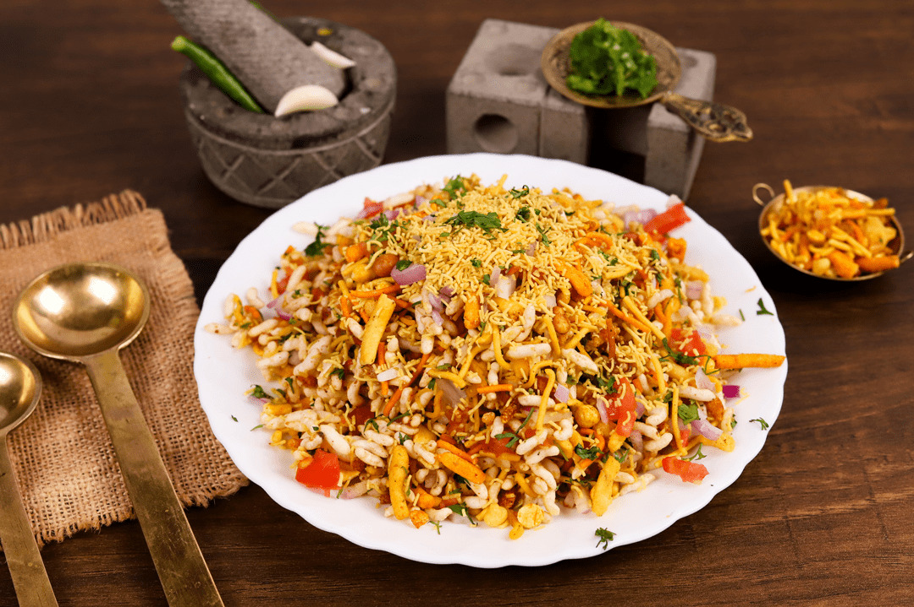

Home
Bhel

Description:
Bhel is a classic Indian street food snack that is essentially a symphony of textures and bold
flavors in a single plate.
It features a light and airy base of puffed rice mixed with
various crunchy elements like farsan, peanuts, and crispy fried bits.
To give it a fresh and sharp kick, it is tossed with finely diced onions and tomatoes, then
finished with a heavy dusting of golden sev and a sprinkle of fresh coriander.
The entire mix is balanced with tangy and spicy notes, making it a go-to comfort food for anyone looking for a
savory, satisfying crunch.
Ingredients:
- Puffed Rice
- Sev
- Onions
- Tomatoes
- Farsan
- Peanuts
- Coriander
- Garlic
- Green Chilies
Steps:
- Gather the Base: Place a large amount of puffed rice into a mixing bowl.
- Add the Crunch: Mix in a variety of crispy farsan and peanuts to create texture.
- Include Fresh Vegetables: Toss in finely diced purple onions and red tomatoes.
- Incorporate Aromatics: Add a crushed paste made from fresh garlic and green chilies for a
local spicy kick.
- Season: Stir in the desired spices and local chutneys until everything is well combined.
- Top with Sev: Sprinkle a heavy layer of thin, crunchy sev over the mixture.
- Garnish: Finish with a handful of freshly chopped coriander leaves.
- Serve: Transfer to a plate and enjoy immediately to maintain the crunch.